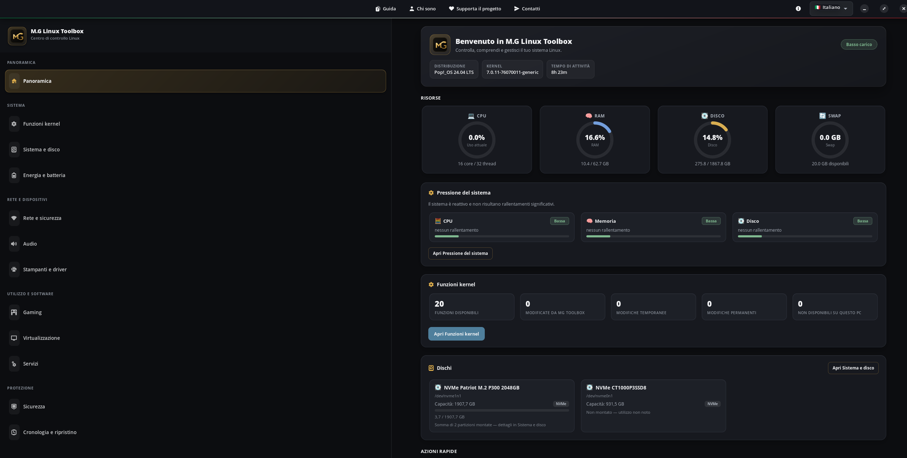

{kind=link}
Funzioni Kernel
CPU, memoria, swap, ZRAM, Zswap, THP e scheduler mostrati solo quando sono rilevati.
 GregorioManganoParliamone ↗
GregorioManganoParliamone ↗Linux · Beta pubblica
Un'interfaccia grafica che rende più chiare le funzioni Linux spesso affidate al terminale, spiegando cosa il sistema supporta davvero.

Screenshot ufficiale: la panoramica di M.G Linux Toolbox. Apri immagine
Che cos'è
M.G Linux Toolbox è un'interfaccia grafica dedicata alle funzioni di sistema che su Linux richiedono spesso terminale, documentazione e attenzione ai dettagli. Non presume che ogni computer sia uguale: prima rileva ciò che kernel, hardware e distribuzione mettono realmente a disposizione, poi presenta le opzioni con parole semplici. Quando possibile, una modifica può essere provata fino al riavvio prima di diventare permanente; il programma mostra inoltre lo stato iniziale e le indicazioni per il ripristino. È pensato per chi vuole capire meglio il proprio sistema senza lanciare comandi alla cieca, ma anche per chi usa già Linux e desidera una panoramica più ordinata. L'obiettivo non è promettere ottimizzazioni automatiche: è rendere ogni scelta più visibile, più spiegata e più controllabile.
Caratteristiche principali
CPU, memoria, swap, ZRAM, Zswap, THP e scheduler mostrati solo quando sono rilevati.
Dispositivi, TRIM, SMART, manutenzione e attività del disco basata sui dati del sistema.
Wi-Fi, hotspot, Bluetooth, Samba, IPv6 e DNS, incluso DNS-over-TLS quando disponibile.
Cosa puoi fare
Consultare profili energetici, batteria, PipeWire, dispositivi, CUPS e driver rilevati.
Controllare Flatpak, Flathub, sorgenti software e salute dei pacchetti in modo adatto alla distribuzione.
Vedere GameMode, Vulkan e strumenti disponibili nei repository configurati, con installazioni mirate.
Riconoscere KVM, IOMMU, VFIO, KSM, container e servizi che il sistema mette a disposizione.
Consultare firewall, SSH, aggiornamenti, AppArmor o SELinux, Secure Boot e ClamAV.
Rivedere le operazioni, creare punti di ripristino e tornare ai valori salvati quando supportato.
Installazione e download
Nella pagina Release è disponibile l'AppImage da scaricare e verificare. Il repository GitHub contiene guida di installazione, dipendenze, aggiornamento e le due modalità previste per usare il programma.
Scopri anche
Ti è stato utile questo progetto?Un piccolo aiuto contribuisce a tenere disponibili software e contenuti gratuiti.
♡ Sostieni il progetto